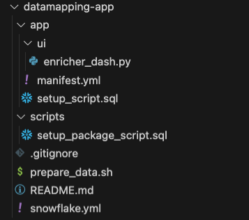
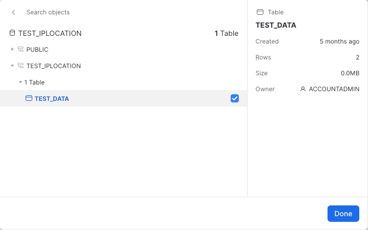

The Snowflake Native App Framework is a fantastic way for Snowflake application providers to distribute proprietary functionality to their customers, partners and to the wider Snowflake Marketplace. As a provider you can be assured that your code and data (if included) is secure and that the consumers of your application can take advantage of the functionality but not see the details of the implementation. As a consumer of an application you can be assured that the provider via the application is not able to see or operate on any data in your account unless you explicitly allow them access.
Prerequisites
- A basic understanding of Snowflake Native Applications
- An introductory level of coding in Python
- A basic knowledge of Snowflake
- Snowflake CLI installed and configured
What You'll Learn
- The basic building blocks of a Snowflake Native Application
- Assigning Permissions to your Snowflake Native Application
- Allowing configuration of your Snowflake native Application through a Streamlit UI
What You'll need
- A Snowflake account in AWS
- A Snowflake user created with ACCOUNTADMIN permissions - this is more than is strictly necessary and you can read more about the permissions required here. You MUST execute the entire tutorial using the accountadmin role.
- You must have setup your preferred connection using the latest Snowflake CLI version available, which can be downloaded here.
Snowflake CLI
Snowflake CLI is a command-line tool that allow the developers to execute powerful and simplified SQL operations. New features are added continuously and it is a preview feature itself, but it is available for all accounts. It is important to keep the CLI updated to ensure the newest features and bug fixes.
The Scenario
The scenario is as follows. You are a Snowflake Native Application provider. Your application requires the consumer of the application to pass in a column in a table that contains an IP address and you will write out enhanced data for that particular IP address to another column in the same consumer defined table.
The scenario presents some challenges to me as the provider
- You need Read and Write access to a table in the consumer account
- You have no idea what the name of the IP address attribute will be
- You have no idea where the consumer will want me to write out the data
Requesting read and write access to a table in the consumer account is easy because my application can simply tell the consumer I require Read/Write access to a table and the consumer can grant access. The next two points are slightly more tricky. We have the ability within the Snowflake Native App Framework to gain access to a table which the application consumer will specify. Every consumer of the application will most likely have differently named attributes as well. In testing an application's functionality locally you know the names of the columns and life is good. Let's see two ways in which you could solve this problem with Snowflake Native Apps. There are others but here we want to just call out two for now.
Solution 1: Make the consumer do the work
In the readme file for the application you could distribute instructions for the consumer to make sure they have a table called T that contains columns labeled C_INPUT and C_OUTPUT. The application consumer could enable this by providing a view over the top of an existing table to the application. Whilst this will work, we don't necessarily want new objects to be created in Snowflake databases simply to serve the purpose of our application.
Solution 2: Provide an intuitive UI in the application
The application provides a user interface which allows the consumer of the application to map columns in an existing table/view to the requirements of the application. This is much more user friendly and doesn't require new objects to be created in a Snowflake database.
The first solution is not really what we want to be doing because the consumer will potentially have to create objects on their Snowflake instance just to satisfy the application's requirements, so this Quickstart will deliver the second solution.
The project we are about to create is composed of several files in the following tree structure:
-- Datamapping App project
|-- app
| |-- ui
| | |-- enricher_dash.py
| |-- manifest.yml
| |-- setup_script.sql
|-- scripts
| |-- setup-package-script.sql
|-- .gitignore
|-- prepare_data.sh
|-- README.md
|-- snowflake.yml
To start creating this folder structure, go to your console and inside the folder you want the project to reside. Execute the following command: snow app init datamapping_app_streamlit.
Now, inside the app folder, create another one, called ui, and add the following file
- enricher_dash.py
The next step is to create an empty file called prepare_data.sh at the project root.
From the project's root, create a new folder and name it scripts, inside, create a file named setup_package_script.sql.
Finally, replace the content of snowflake.yml file with the following code:
definition_version: 1
native_app:
name: IP2LOCATION_STREAMLIT
source_stage: app_src.stage
artifacts:
- src: app/*
dest: ./
package:
scripts:
- scripts/setup_package_script.sql
Finally, the tree structure inside your project structure should look like this:

The application itself has been broken down into three parts:
- The building of the application package on the provider and the sharing of the lookup database with the application.
- The building of the application setup script which contains the functionality to accept an IP address, look it up in the database we just shared with the application and write back enhanced data from the application.
- Arguably (certainly for this Quickstart) the most important part which is the user interface written using Streamlit. This is where we will do the mappings.
To do the enhancement of the IP addresses we will use a dataset called DB11 from IP2LOCATION. There is a free version of this database available here, which is the one we will use in this quickstart. There are several versions of this IP information; we are going to use the IPv4 verison for this tutorial. If you do not have an account with them already you will need to create one. Download the dataset as a CSV file so it is ready to import into the provider account.
Preparing the data
The first thing you need to do is create a new database which will serve as the lookup database for the application, following that, it is necessary to create a table, a file format, and a stage. That way we can upload our files to the stage, using the file format and after that loading that staged data into the table.
# Create a database and a schema to hold the data to lookup.
snow sql -q "
CREATE DATABASE IF NOT EXISTS IP2LOCATION;
CREATE SCHEMA IF NOT EXISTS IP2LOCATION;
"
# Create the table to host the data.
# Create a file format for the file
# Create a stage so we can upload the file
snow sql -q "
CREATE TABLE IF NOT EXISTS LITEDB11 (
ip_from INT,
ip_to INT,
country_code char(2),
country_name varchar(64),
region_name varchar(128),
city_name varchar(128),
latitude DOUBLE,
longitude DOUBLE,
zip_code varchar(30),
time_zone varchar(8)
);
CREATE OR REPLACE FILE FORMAT LOCATION_CSV
SKIP_HEADER = 1
FIELD_OPTIONALLY_ENCLOSED_BY = '\"'
COMPRESSION = AUTO;
CREATE STAGE IF NOT EXISTS IP2LOCATION.IP2LOCATION.LOCATION_DATA_STAGE
file_format = LOCATION_CSV;" --database ip2location --schema ip2location
# Copy the csv files from your local machine to the stage we created previously
snow stage copy /USER_PATH_HERE/IP2LOCATION-LITE-DB11.CSV @location_data_stage --database ip2location --schema ip2location
# Copy the csv file from the stage to load the table
snow sql -q "copy into litedb11 from @location_data_stage
files = ('IP2LOCATION-LITE-DB11.CSV')
;" --database ip2location --schema ip2location
# Simple query test to ensure the table is correctly filled.
snow sql -q "
SELECT COUNT(*) FROM LITEDB11;
SELECT * FROM LITEDB11 LIMIT 10;" --database ip2location --schema ip2location
# Create test database and schema.
snow sql -q "
DATABASE IF NOT EXISTS TEST_IPLOCATION;
CREATE SCHEMA IF NOT EXISTS TEST_IPLOCATION;"
# Create test table to insert some values
snow sql -q "
CREATE OR REPLACE TABLE TEST_IPLOCATION.TEST_IPLOCATION.TEST_DATA (
IP VARCHAR(16),
IP_DATA VARIANT
);"
# Insert testing values to use later on
snow sql -q "
INSERT INTO TEST_IPLOCATION.TEST_IPLOCATION.TEST_DATA(IP) VALUES('73.153.199.206'),('8.8.8.8');"
You can run the file by executing: SNOWFLAKE_DEFAULT_CONNECTION_NAME=your_connection ./prepare_data.sh
in the folder root.
We now have the referenced database setup in the provider account so we are ready to start building the application itself.
--Create a schema in the applcation package
CREATE SCHEMA IF NOT EXISTS {{ package_name }}.IP2LOCATION;
--Grant the application permissions on the schema we just created
GRANT USAGE ON SCHEMA {{ package_name }}.IP2LOCATION TO SHARE IN APPLICATION PACKAGE {{ package_name }};
-- Grant the applications permissions to reference the database where the data is located
GRANT REFERENCE_USAGE ON DATABASE IP2LOCATION TO SHARE IN APPLICATION PACKAGE {{ package_name }};
--We should not reference directly to the table, instead we need to create a proxy artifact here referencing the data we want to use
CREATE VIEW IF NOT EXISTS {{ package_name }}.IP2LOCATION.LITEDB11
AS
SELECT * FROM IP2LOCATION.IP2LOCATION.LITEDB11;
--Grant permissions to the application on the view.
GRANT SELECT ON VIEW {{ package_name }}.IP2LOCATION.LITEDB11 TO SHARE IN APPLICATION PACKAGE {{ package_name }};
Fantastic, we now have an application package with permissions onto the lookup database. That's the first part of the application completed but we will be adding the necessary files to deploy the actual application.
Every Snowflake Native App is required to have a manifest file. The manifest file defines any properties of the application as well as the location of the application's setup script. The manifest file for this application will not use all the possible fetures of the manifest file so you can read more about it here. The manifest file has three requirements:
- The name of the manifest file must be manifest.yml.
- The manifest file must be uploaded to a named stage so that it is accessible when creating an application package or Snowflake Native App.
- The manifest file must exist at the root of the directory structure on the named stage.
The named stage in this example is going to be created when we execute the snow app run command.
manifest_version: 1
artifacts:
readme: README.md
setup_script: setup_script.sql
default_streamlit: ui."Dashboard"
references:
- tabletouse:
label: "Table that contains data to be keyed"
description: "Table that has IP address column and a column to write into"
privileges:
- SELECT
- INSERT
- UPDATE
- REFERENCES
object_type: TABLE
multi_valued: false
register_callback: config_code.register_single_callback
The artifacts section details what files will be included in the application and their location relative to the manifest file. The references section is where we define the permissions we require within the consumer account. This is what we will ask the consumer to grant. The way it does that is by calling the register_callback procedure which we will shortly define in our setup script.
In a Snowflake Native App, the setup script is used to define what objects will be created when the application is installed on the consumer account. The location of the file as we have seen is defined in the manifest file. The setup script is run on initial installation of the application and any subsequent upgrades/patches.
Most setup scripts are called either setup.sql or setup_script.sql but that is not a hard and fast requirement. In the setup script you will see that for some objects, the application role is given permissions and some not.
If the application role is permissioned onto an object then the object will be visible in Snowsight after the application is installed (permissions allowing). If the application role is not granted permissions onto an object then you will not see the object in Snowsight. The application itself can still use the objects regardless.
--create an application role which the consumer can inherit
CREATE APPLICATION ROLE APP_PUBLIC;
--create a schema
CREATE OR ALTER VERSIONED SCHEMA ENRICHIP;
--grant permissions onto the schema to the application role
GRANT USAGE ON SCHEMA ENRICHIP TO APPLICATION ROLE APP_PUBLIC;
--this is an application version of the object shared with the application package
CREATE VIEW ENRICHIP.LITEDB11 AS SELECT * FROM IP2LOCATION.litedb11;
-- If the user prefers, access can be granted directly to the IPLOCATION.litebd11 view, created in the setup_package_script file.
--accepts an IP address and returns a modified version of the IP address
--the modified version will be used in the lookup
CREATE OR REPLACE SECURE FUNCTION ENRICHIP.ip2long(ip_address varchar(16))
RETURNS string
LANGUAGE JAVASCRIPT
AS
$$
var result = "";
var parts = [];
if (IP_ADDRESS.match(/^\d{1,3}\.\d{1,3}\.\d{1,3}\.\d{1,3}$/)) {
parts = IP_ADDRESS.split('.');
result = (parts[0] * 16777216 +
(parts[1] * 65536) +
(parts[2] * 256) +
(parts[3] * 1));
}
return result;
$$
;
--this function accepts an ip address and
--converts it using the ip2long function above
--looks up the returned value in the view
--returns the enhanced information as an object
CREATE OR REPLACE SECURE FUNCTION ENRICHIP.ip2data(ip_address varchar(16))
returns object
as
$$
select object_construct('country_code', MAX(COUNTRY_CODE), 'country_name', MAX(COUNTRY_NAME),
'region_name', MAX(REGION_NAME), 'city_name', MAX(CITY_NAME),
'latitude', MAX(LATITUDE), 'longitude', MAX(LONGITUDE),
'zip_code', MAX(ZIP_CODE), 'time_zome', MAX(TIME_ZONE))
from ENRICHIP.LITEDB11 where ip_from <= ENRICHIP.ip2long(ip_address)::int AND ip_to >= ENRICHIP.ip2long(ip_address)::int
$$
;
--create a schema for our callback procedure mentioned in the manifest file
create or alter versioned schema config_code;
--grant the application role permissions onto the schema
grant usage on schema config_code to application role app_public;
--this is the permissions callback we saw in the manifest.yml file
create or replace procedure config_code.register_single_callback(ref_name string, operation string, ref_or_alias string)
returns string
language sql
as $$
begin
case (operation)
when 'ADD' then
select system$set_reference(:ref_name, :ref_or_alias);
when 'REMOVE' then
select system$remove_reference(:ref_name);
when 'CLEAR' then
select system$remove_reference(:ref_name);
else
return 'Unknown operation: ' || operation;
end case;
system$log('debug', 'register_single_callback: ' || operation || ' succeeded');
return 'Operation ' || operation || ' succeeded';
end;
$$;
--grant the application role permissions to the procedure
grant usage on procedure config_code.register_single_callback(string, string, string) to application role app_public;
--create a schema for the UI (streamlit)
create or alter versioned schema ui;
--grant the application role permissions onto the schema
grant usage on schema ui to application role app_public;
--this is our streamlit. The application will be looking for
--file = enricher_dash.py in a folder called ui
--this is the reference to the streamlit (not the streamlit itself)
--this was referenced in the manifest file
create or replace streamlit ui."Dashboard" from 'ui' main_file='enricher_dash.py';
--grant the application role permissions onto the streamlit
grant usage on streamlit ui."Dashboard" TO APPLICATION ROLE APP_PUBLIC;
--this is where the consumer data is read and the enhanced information is written
CREATE OR REPLACE PROCEDURE ENRICHIP.enrich_ip_data(inp_field varchar, out_field varchar)
RETURNS number
AS
$$
DECLARE
q VARCHAR DEFAULT 'UPDATE REFERENCE(''tabletouse'') SET ' || out_field || ' = ENRICHIP.ip2data(' || inp_field || ')';
result INTEGER DEFAULT 0;
BEGIN
EXECUTE IMMEDIATE q;
RETURN RESULT;
END;
$$;
We now come to arguably the most important part of the application for us which is the user interface. We have defined all the objects we need to create and also the permissions we will require from the consumer of the application.
A little recap on what this UI needs to achieve:
- Map a field in a table to an ip column
- Map a field in a the same table to receive the enhanced output
Once we have the streamlit UI built we can then finish off the build of the application package.
Building the User Interface
The code for the streamlit looks like this. There will be other ways of doing this, but this is one way.
import streamlit as st
import pandas as pd
from snowflake.snowpark.context import get_active_session
# get the active session
session = get_active_session()
# define the things that need mapping
lstMappingItems = ["IP ADDRESS COLUMN", "RESULT COLUMN"]
# from our consumer table return a list of all the columns
option_source = session.sql("SELECT * FROM REFERENCE('tabletouse') WHERE 1=0").to_pandas().columns.values.tolist()
# create a dictionary to hold the mappings
to_be_mapped= dict()
#create a form to do the mapping visualisation
with st.form("mapping_form"):
header = st.columns([1])
#give it a title
header[0].subheader('Define Mappings')
# for each mapping requirement add a selectbox
# populate the choices with the column list from the consumer table
for i in range(len(lstMappingItems)):
row = st.columns([1])
selected_col = row[0].selectbox(label = f'Choose Mapping for {lstMappingItems[i]}',options = option_source)
# add the mappings to the dictionary
to_be_mapped[lstMappingItems[i]] = selected_col
row = st.columns(2)
# submit the mappings
submit = row[1].form_submit_button('Update Mappings')
# not necessary but useful to see what the mappings look like
st.json(to_be_mapped)
#function call the stored procedure in the application that does the reading and writing
def update_table():
# build the statement
statement = ' CALL ENRICHIP.enrich_ip_data(\'' + to_be_mapped["IP ADDRESS COLUMN"] + '\',\'' + to_be_mapped["RESULT COLUMN"] + '\')'
#execute the statement
session.sql(statement).collect()
#again not necessary but useful for debugging (would the statement work in a worksheet)
st.write(statement)
#update the consumer table
st.button('UPDATE!', on_click=update_table)
Finishing the Application
All the pieces are in place for our application, we just created (manifest.yml, setup_script.sql and enricher_dash.py) and now we are going to actually deploy it in the next step.
There are a few ways we could deploy our application:
- Same account / Different account
- Same Org / Different Org
- Debug Mode / non-debug mode
In a manual environment you would have to upload the files to the stage APPLICATION_STAGE and then run other commands from a SQL worksheet, but instead, we are taking the Snowflake CLI approach and run:
snow app run --database ip2location
At the root of the project, and the CLI is going to create the application for you, using the files explained in the previous steps, as well as the other configuration files present in the project folder.
Viewing the Application
Because we have installed the application locally we needed to create a table to test with. That step we did it in the prepare_data.sh file.
Click on the link that appeared in your console output.
The application if you remember needs permissions onto a table in the consumer account (the one we just created). We have now switched roles to being the consumer. We are finished with being the application provider. Over on the right hand side hit the shield icon to go to Security.

This will take you through to a page which will allow you to specify the table that you want the application to work with. This dialog is a result of the REFERENCE section in the manifest file.

Click Add and navigate to the table we just created and select it:

Once we click Done and Save then the application has been assigned the needed permissions. Now go back to the Dashboard section and click it. It should open to a screen like the following:

You should recognise the layout from building the streamlit earlier. If you drop down either of the two boxes you will see that they are populated with the columns from the table the application has been assigned permissions to. If we populate the mappings correctly, hit Update Mappings then you will see the piece of JSON underneath change to tell us the currently set mappings. The ones we want for this application are:

Hit the Update Mappings button and then the UPDATE! button. At the top of the screen you will see the SQL that you just executed on your data.

Now go back to your console to confirm that enhanced data has been written to your database table.
snow sql -q " USE DATABASE TEST_IPLOCATION;
USE SCHEMA TEST_IPLOCATION;
SELECT * FROM TEST_DATA;"

Once you have finished with the application and want to clean up your environment you can execute the following script
snow sql -q "DROP DATABASE TEST_IPLOCATION;"
snow app teardown
We have covered a lot of ground in this Quickstart. We have covered the building blocks of almost every Snowflake Native App you will ever build. Sure some will be more complicated but the way you structure them will be very similar to what you have covered here.
What we learned
- Creating an Application Package
- Defining and understand the role of the manifest file
- Creating the Setup script
- Understanding how References work within an application
- How to deploy an application locally
- How to assign permissions to the application
- creating a user interface for an application using Streamlit